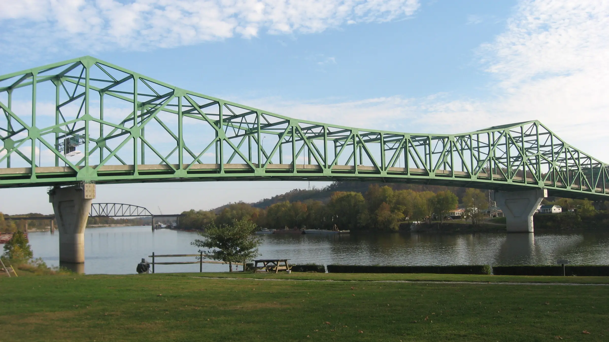
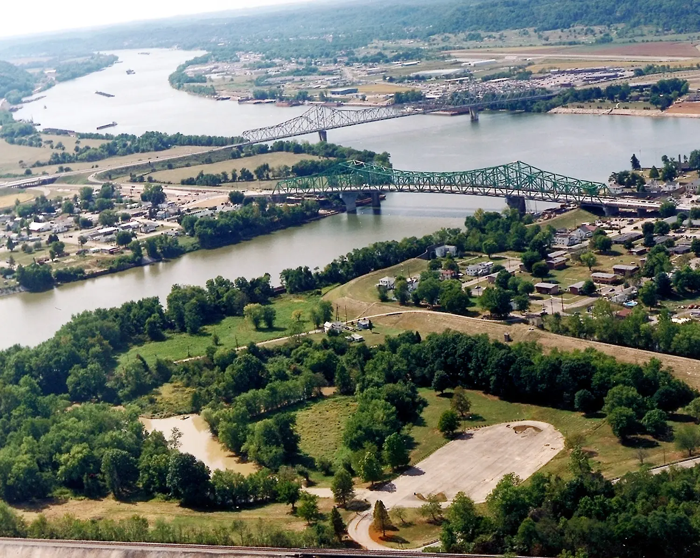
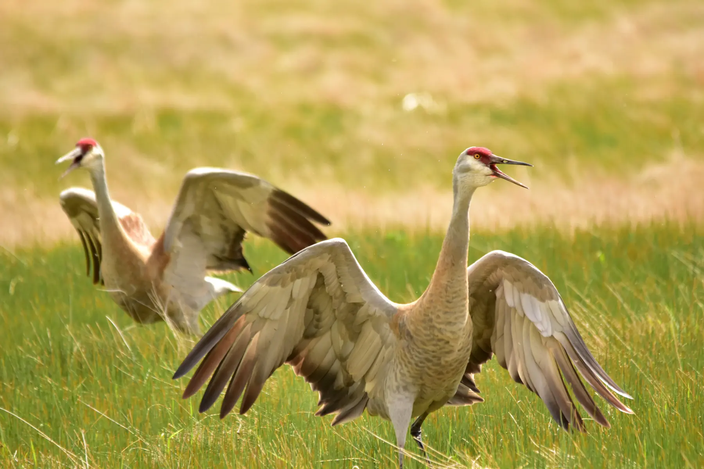
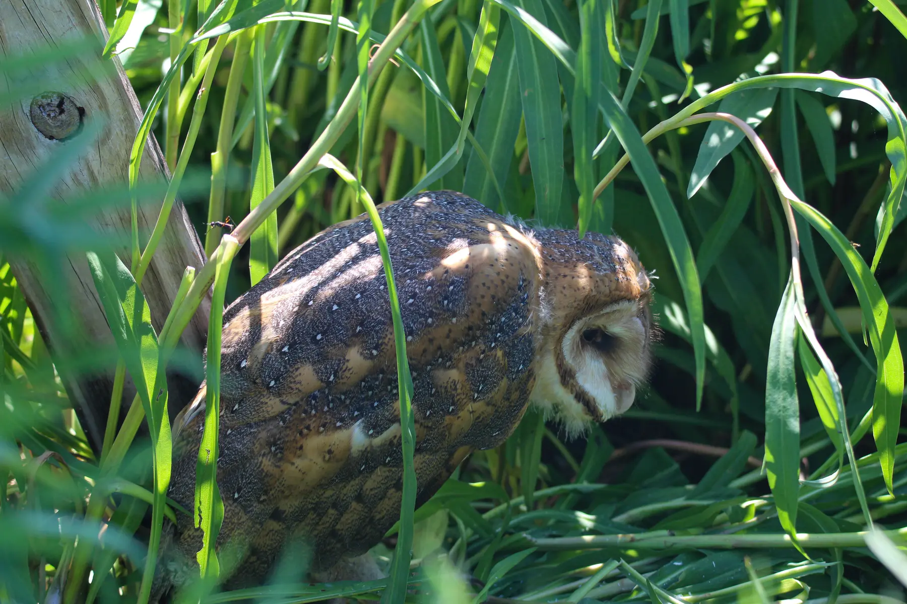
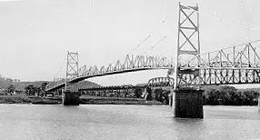
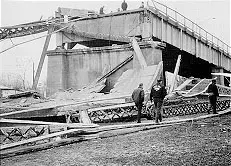
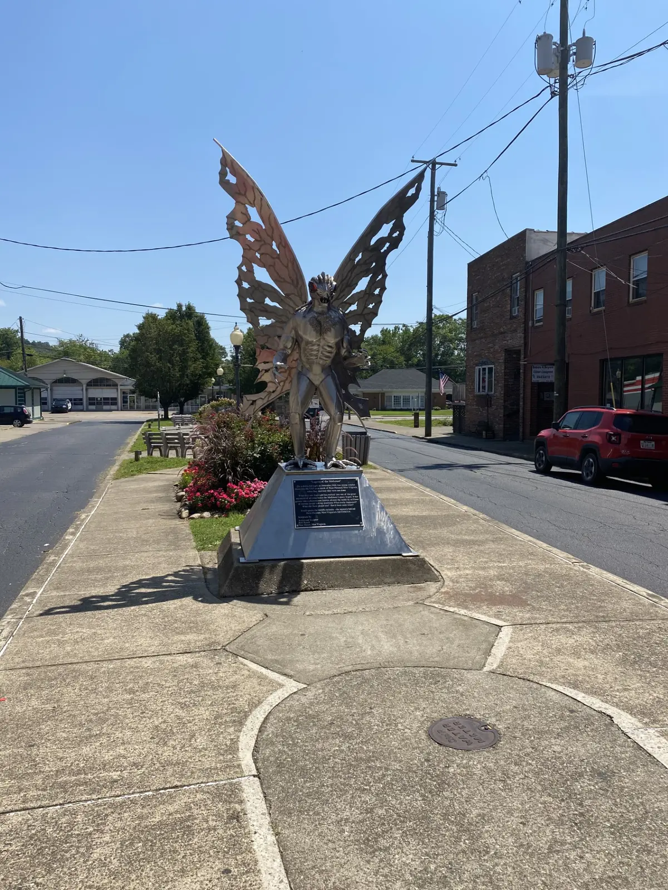

The Mothman.
Four witnesses, a midnight road and a man-sized bird entered the record in November 1966. The sightings remain unresolved. The prophecy came later.
A strange report became local news before it became a legend.
Shortly after midnight on 15 November 1966, Roger and Linda Scarberry and Steve and Mary Mallette reported a large, winged figure near the former West Virginia Ordnance Works north of Point Pleasant. Police searched the area and did not locate it.[01] [02]

The Point Pleasant Register ran “Couples See Man-Sized Bird…Creature…Something” on 16 November. Journalist Mary Hyre covered the expanding story for the Athens Messenger and mentioned the “Mason County monster” in ten columns before the end of 1966—before the name Mothman settled in.[01]
The accessible record establishes named witnesses, immediate reporting and a police response. It does not establish what the witnesses saw.
Archive rule: testimony can document an encounter without identifying its cause.
The durable image is a compressed version of the testimony.
The first accounts supplied the features that survived. Later art made them more anatomical, more demonic and more mothlike.
Initial account
Human-sized · winged · red-eyedThe two couples described a tall, birdlike figure, large red eyes in the headlights and flight or gliding that appeared to keep pace with their car.
- Four named witnesses
- Immediate newspaper reporting
- Police searched afterward
- No specimen, photograph or trace recovered
Sighting wave
Many reports · uneven detailPoint Pleasant's local history says more than 100 reports were documented during the following year. The public-facing archive is not a complete, independently audited register, so the number remains a local historical claim.[03]
- Media attention expanded rapidly
- Descriptions were not identical
- Later paranormal claims accumulated
- No diagnostic physical evidence emerged
What the file can prove—and what it cannot.
Contemporary reporting, later recollection, physical evidence and folklore do not carry the same weight.
Factory ruins inside wildlife habitat.
WVDNR describes McClintic as 3,655 acres of farmland, brushland, wetlands and mixed hardwood forest with 26 ponds. Those habitats support large birds and other wildlife.
USACE and West Virginia DEP document the site's TNT-production history and continuing environmental work. The broken industrial landscape is evidence of that history—not of a creature.
Open the federal site recordField access: use designated public WMA routes only. Do not enter restricted, unstable or remediated structures.
Two bird explanations fit parts of the story.
Neither hypothesis proves what every witness saw. Both show how known anatomy can generate the core Mothman features under poor viewing conditions.

Height, wings and a red crown.
A West Virginia University wildlife professor proposed a sandhill crane during the original wave. The bird is tall, long-winged and carries a red crown. PBS notes that the 1960s regional record is incomplete, so presence at the exact encounter remains unverified.[09] [11]

Eyeshine, silence and abandoned buildings.
Audubon summarizes investigator Joe Nickell's barn-owl hypothesis: owls roost in abandoned structures, fly quietly and can produce a startling face-and-eyes impression in headlights. This fits the setting and some traits, not the reported six-foot scale.[10] [12]


A failed eyebar started the collapse.
The NTSB found that a cleavage fracture in eyebar 330 developed through the joint action of stress corrosion and corrosion fatigue over the bridge's forty-year life. The structure then collapsed in about one minute.
- 46 people killed
- 9 people injured
- 31 of 37 vehicles fell with the bridge
- The disaster helped drive national bridge-inspection standards
No official investigation identifies Mothman as a warning, cause or factor.
The omen was attached after the disaster.
The original case and the prophecy legend are related cultural records, not the same claim.
Unidentified birdlike figure
The first coverage asks what the couples saw. It does not announce a bridge prophecy.
A widening paranormal file
More sightings, lights and unusual stories accumulate around Point Pleasant.
A documented civic disaster
The bridge collapses. The engineering failure and human loss stand on their own record.
The Mothman Prophecies
John Keel's book popularizes the warning interpretation and binds the creature to the bridge in national memory.[01]
Thirteen months of reports became sixty years of folklore.
The secure dates show how quickly the record changed shape.
The TNT-area encounter
Roger and Linda Scarberry and Steve and Mary Mallette report a large winged figure north of Point Pleasant.[01]
The story reaches print
The Point Pleasant Register publishes the man-sized-bird headline; Mary Hyre also begins covering the case.[01]
A crane explanation appears
A WVU wildlife professor tells the press he believes witnesses are seeing a sandhill crane.[09]
The Silver Bridge collapses
Forty-six people die. The NTSB later documents the structural failure.[07]
Keel publishes The Mothman Prophecies
The book makes the bridge-warning connection central to the national legend.[01]
The creature is now visible in daylight.
Point Pleasant's statue, museum and festival document what Mothman became, not what flew over Route 62.

A town made the mystery its own.
The Smithsonian describes Mothman as both hometown icon and part of a wider cryptid revival. The museum preserves clippings, witness material and later media artifacts; the festival turns the story into an annual public performance.
- Statue and museum are cultural evidence
- Festival retellings keep the story active
- Commercial afterlife does not invalidate the original witnesses
- Popularity does not establish a species
A real report. An unidentified cause. A later prophecy.
The 1966 witness and newspaper record deserves to be taken seriously as history. It does not provide the biological evidence required for an unknown flying animal. Crane and owl explanations are plausible without being case-closing.
The Silver Bridge connection belongs to the legend's later development. The collapse killed forty-six people, and its cause is documented in engineering—not paranormal—terms.
Encounter documented. Creature unconfirmed. Prophecy unsupported. Cultural impact undeniable.
Contemporary reporting, public records and real animals.
The source trail keeps eyewitness history, environmental records, bridge engineering, wildlife explanations and cultural afterlife in distinct categories.
- 01West Virginia Public Broadcasting · Mary Hyre and the first reportsContemporary headline excerpts, police response, Hyre's coverage and the later Keel connection.Open ↗
- 02Smithsonian Center for Folklife & Cultural Heritage · MothmanPoint Pleasant narrative, named witnesses, community identity and the modern cryptid revival.Open ↗
- 03City of Point Pleasant · HistoryOfficial local chronology and the locally reported figure of more than 100 sightings.Open ↗
- 04West Virginia DNR · McClintic Wildlife Management AreaOfficial acreage, habitats, wildlife opportunities, ponds, access and no-camping rule.Open ↗
- 05U.S. Army Corps of Engineers · West Virginia Ordnance WorksTNT production history, property context and current remediation program.Open ↗
- 06West Virginia DEP · Federal Facilities Restoration ProgramOfficial state record of 1942–45 operation, 1981 contamination discovery and continuing cleanup.Open ↗
- 07NTSB · Collapse of U.S. 35 Highway BridgeCasualty totals, failure sequence, fracture location and official probable cause.Open ↗
- 08Federal Highway Administration · National Bridge Inspection StandardsThe Silver Bridge failure and its role in creating the modern national bridge-safety program.Open ↗
- 09PBS Monstrum · MothmanHistorical overview of the early sandhill-crane proposal and later folklore additions.Open ↗
- 10Audubon · Is the Mothman an Owl?Joe Nickell's barn-owl hypothesis and owl behavior relevant to the reported setting.Open ↗
- 11U.S. Fish & Wildlife Service · Sandhill cranesPublic-domain wildlife image and documented red crown and wing display.Open ↗
- 12U.S. Fish & Wildlife Service · Barn owlPublic-domain wildlife image and species identification.Open ↗
- 13Mothman Museum · Official siteCurrent museum description and collection scope. Visitor details may change.Open ↗
Point Pleasant hero
Bartow Jones Bridge from Tu-Endie-Wei State Park, photographed by Nyttend, 2012. Public domain. Cropped, resized and toned. This is the modern Kanawha River bridge, not the Silver Bridge.
Point Pleasant aerial view
Charles Johnson / U.S. Army Corps of Engineers. Public domain. Resized and toned.
Sandhill cranes
Tom Koerner / U.S. Fish and Wildlife Service. Public domain. Cropped, resized and toned.
Barn owl
Holly Keepers / U.S. Fish and Wildlife Service. Public domain. Cropped, resized and toned.
Silver Bridge historical photographs
Federal Highway Administration / U.S. Department of Transportation. 1928 bridge and 1967 collapse. Public domain. Low-resolution federal documentary images presented at native aspect ratio.
Mothman statue
Csassen13, 2020. CC0 1.0 public-domain dedication. Cropped, resized and toned. The statue is cultural art, not a witness reconstruction.
Research cutoff · 23 Aug 2026No AI imagery · No alleged creature image presented as evidence